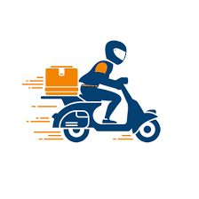

5 Platos Saludables Que Puedes Pedir Desde Tu Casa
Publicado por: Elian Bernabe | Fecha: 2 de mayo, 2025
Hoy te presentamos una lista de platos saludables que puedes ordenar desde la comodidad de tu hogar: ensaladas frescas, poke bowls, wraps integrales, sopas caseras y jugos detox. Todo esto está disponible en tu zona y con delivery rápido.
Leer más...Tips Para Pedir Comida Y Que Llegue Calientita
Publicado por: Rossiel Martínez | Fecha: 1 de mayo, 2025
No hay nada peor que recibir tu comida fría. En este post te enseñamos cómo elegir el restaurante más cercano, qué horas son mejores para pedir y cómo rastrear tu pedido en tiempo real.
Leer más...